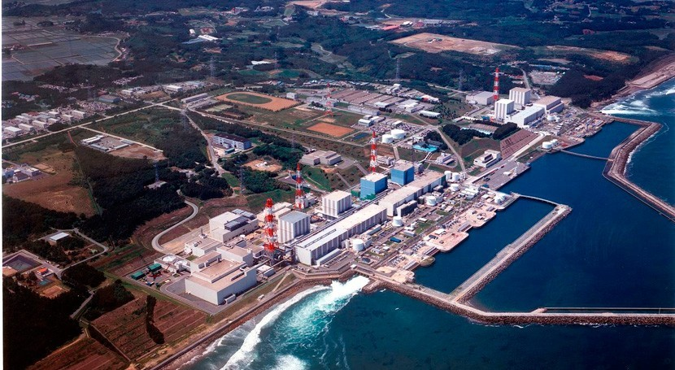
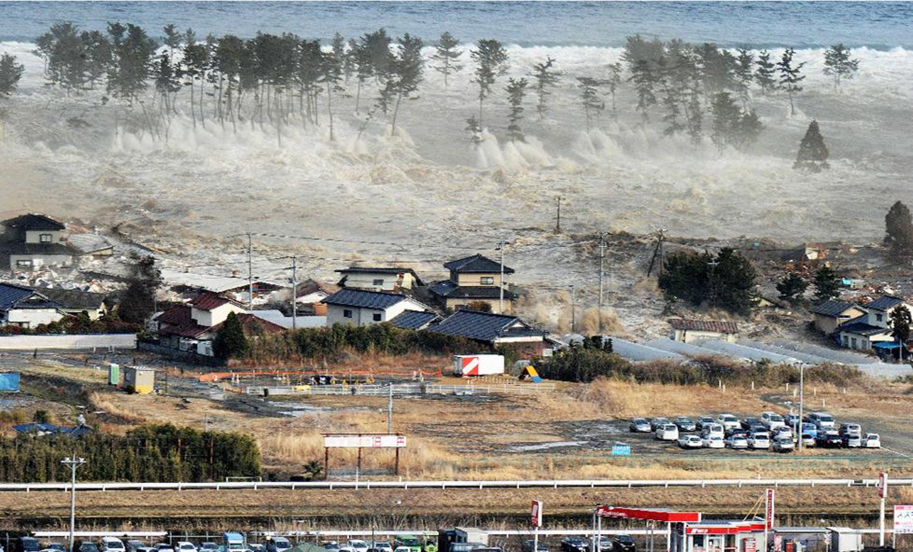
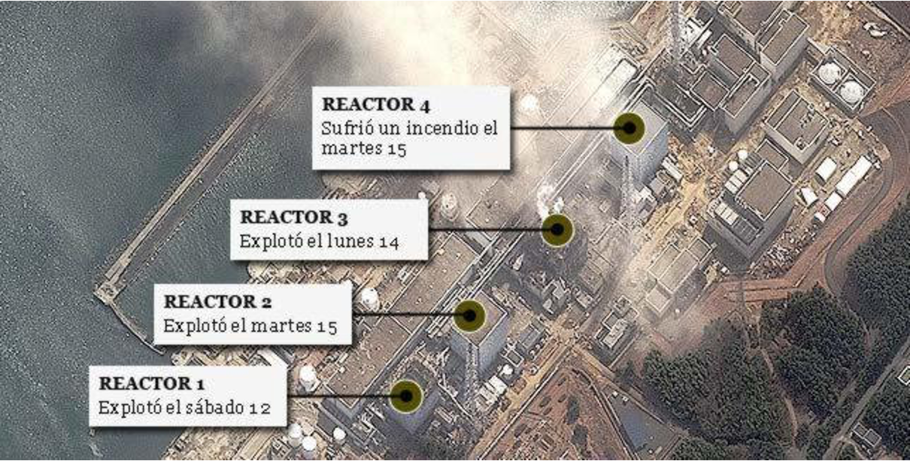

Durante la década de 1960, Estados Unidos apoyó a Japón y otros países del bloque occidental para dotarlos de energía nuclear. Estados Unidos era la primera potencia en tecnología nuclear y dominaba la minería de uranio y boro. General Electric y Westinghouse fueron las empresas encargadas de instalar una red de plantas nucleares en el país, que adicionalmente se incorporó al Organismo Internacional de Energía Atómica y firmó el Tratado de No Proliferación Nuclear.
La central de Fukushima fue diseñada por la compañía General Electric, y construida por Tepco en un anclaje al suelo firme excavando 25 metros por debajo del nivel de piso, lo cual proveyó la estabilidad esperada para los edificios de los reactores, aunque se pasó por alto un detalle de suma importancia: se localizaba en una zona costera que estaba expuesta a las inclemencias sismológicas de las fallas geológicas características de la región. Como se sabía que en la zona podían darse tsunamis, la central contaba con un muro de contención de 6 metros de altura, pero muchos de sus sistemas esenciales se encontraban en zonas inundables, como los generadores diésel de emergencia localizados en los sótanos. En el diseño de la central se hizo énfasis y se priorizó el peligro que representaría un terremoto, antes que lo que podría ocurrir ante un posible tsunami. Finalmente, comenzó a generar energía en el año 1971.

El 11 de marzo una ola de más de 15 metros saltó por encima de los diques de contención de la central nuclear, que tenían 6 metros de altura, inundando gran parte de la central y de los equipos de trabajo y emergencia.

Lo que vino después fue inevitable: como los equipos principales y secundarios de seguridad no funcionan por estar destruidos o inundados, y pese al esfuerzo de cientos de voluntarios (llamados los HÉROES DE JAPÓN), se comenzó a calentar el agua de los diferentes circuitos y piscinas. Se produjo hidrógeno gaseoso que es una gas muy explosivo, y finalmente en los días siguientes explotaron los reactores 1, 2, y 3, liberando a la atmósfera materiales radiactivos ricos en 131-I, 134-Cs, 137-Cs y otros de menor periodo de semidesintegración.
